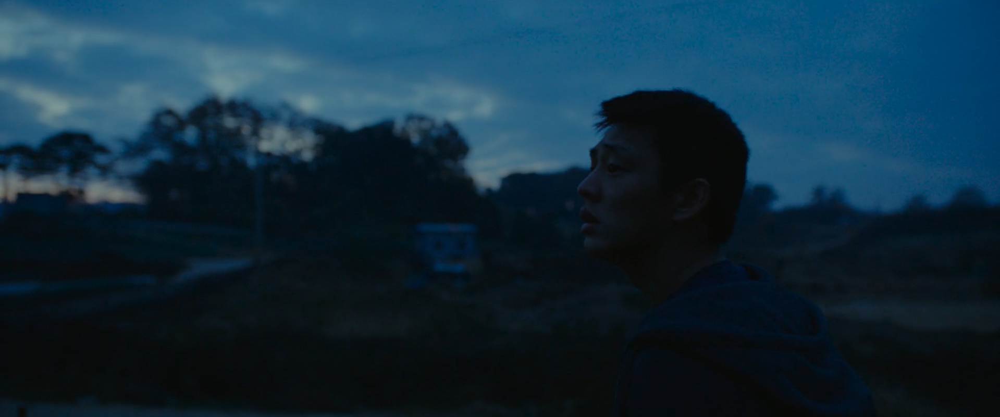

2
May 17, 2020

There's this one film that's bugged me for the longest time - Lee Chang-Dong's 2018 thriller Burning. I've seen it 3 times, once in late 2018 with a high-school friend,
once in mid-2019 with a university friend who's a PhD student, and once in corona-2020 just before writing this. On the first 2 occasions I walked out confused (so did my friends, apparently),
and the most recent viewing was right after a third friend told me they thought Burning told the same story as Parasite, which for a moment I thought solved the whole issue with the film.
I don't usually watch movies more than twice, but I'd been struggling to understand this one for a while. Burning (2018) and Parasite (2019) are both Korean films, both undoubtedly critically acclaimed,
and both films that, at least on the surface, deal with inequality in modern South Korea. The tone, atmosphere, cinematography, and all other aesthetic things are quite different - Burning is this psychological
thriller that thrives on the sinister, "something definitely feels wrong" atmosphere between its two lead characters, while Parasite is a relatively colorful tragicomedy that focuses on the mannerisms and attitudes of the rich
(for lack of a better description). Both films depict two sets of characters, rich and poor, that happen to co-exist and conflict through rather strange circumstances. Both films look and feel very different, but when you've been
confused about one of them for 2 years, you just give up and say yeah, well, why not (shout-out to
Uncle Boonmee Who Can Recall His Past Lives).
However, after reading
this convincing review/argument in The Atlantic,
half-agreeing with my friend, and forgetting the film for a while, I started thinking nah, there's probably a bit more to Burning.
It can't be the EXACT same film. So after sitting in a chair and staring blankly at my mom for a while, I figured yeah, there's probably a bit more to Burning. Maybe there's something about the frustration and loss of autonomy
caused by this coronavirus lockdown/job-market-is-down-the-drain period that resonates with the tense experience of watching the film. Or maybe it's just my mom. Regardless of what it is, although the first half of Burning does
depict the material conditions of inequality on modern Korea as the The Atlantic review describes, the last hour of the film becomes a completely different act, as the film shifts beyond material conditions and centers on the
psychological state of anger and discontent of its character in poverty.
The character is Jong-su, a recent college graduate from a poor rural household in Paju (a town nearby Seoul) who at the start of the film is moving back to live on his family's farm. He is a creative writing major and aspiring writer,
but struggles to find permanent work in Seoul beyond shifts of labor here and there. He runs into Hae-mi, an old high-school classmate stuck in a similar situation, working as a promoter/dancer at a retail store. Through Hae-mi,
he is introduced to Ben, a mysterious new friend who, besides resembling a psychopath, inexplicably drives a Porsche and lives in an upscale apartment in Gangnam, one of Seoul's upscale neighborhoods, at a very young age.
The first half of Burning arguably serves as an introduction to these characters, contrasting their backgrounds, as we move from the apartment of Ben's, to the tiny, cramped, single-window room where Hae-mi lives, to the rural farmland of Paju.
Tensions and distrust slowly build up between Jong-su and Ben, until the figurative mid-point of the film when Hae-mi disappears without a trace and is never seen again.
The second half of Burning is a rather shadowy piece of film-making - this is where I got completely lost the first two viewings, and one critical review even claims the film
"lost its steam"
- as Lee Chang-Dong leads a mysterious game of cat-and-mouse that ultimately reveals very little about anything that happened in the first half. After Hae-mi disappears and leaves Jong-su scrambling to make sense of her remains, he trails after Ben through the upscale neighborhoods of
Seoul and the remote outskirts surrounding it, and runs tirelessly at dawn through the landscape of Paju in search of a burnt-down greenhouse that probably doesn't even exist. There is no logic to this chase - Ben tells very little about himself,
Hae-mi is gone, and what would it even matter if Jong-su were to find the greenhouse he's looking for? What matters for the film is the experience constructed- as our hero or whatever he is, Jong-su, runs through Paju in the vast scenic shots and
chilling atmosphere that make the movie posters look really cool, feelings of anger and angst start to burn inside him, and Burning begins to engage with the psychological state of inequality, inheritance, and a lack of social mobility.
I think that Lee Chang-Dong's contribution to the conversation regarding, and the portrayal of the experience of inequality, and the key element of Burning, is that it stretches beyond what Parasite portrays in the spitefulness towards the rich,
the bitterness towards one's inherited circumstances and inferiority, and includes, most importantly, the frustration and suffocating anger of being unable to improve one's circumstances, while being unable to comprehend why.
Basically, Jong-su is stuck, and regardless of how hard he tries, his fate seems desperately out of his own hands. Inequality, though almost always coupled with a loss of social mobility, isn't truly awful without the latter, and countries or primate
cities that provide a "social elevator" or an "American dream" can still be beneficial to the poor while having a high Gini coefficient. This is not the case for Burning's South Korea, where the country's youth grow increasingly skeptical of their chances of
upwards mobility.
Burning portrays the psychological state of the working class by constructing their social circumstances in the first half of the film, and in the second half putting Jong-su on display as he leads a futile chase in comprehending the affairs of Hae-mi and Ben.
In the first half, Jong-su is introduced as a character strongly frustrated by his circumstances, and lost as to how to resolve them. This functions totally as a depiction of the new generation of young working-class people in South Korea.
There is a scene in the middle of the film, where Jong-su seeks work at a storage warehouse in a remote location outside Seoul. Standing in line alongside him aren't old or middle-aged workers analogous to Midwest/Rust-belt types often portrayed in American films,
but entirely young, seemingly college-aged, males and females who wouldn't look too odd being in Ben's social circle. Jong-su isn't in debt, as Hae-mi presumably is, but is clearly running out of means to support himself, returning to tend the family farm in
Paju at the start of the film. His quiet anger appears to be inherited from his father, who faces trial for assaulting a government official, and who he describes - "he has rage bottled up inside of him. It goes off like a bomb. Once it goes off,
everything gets destroyed" - while he himself is unable to escape from replicating his father's ordeal.
In the second half, Lee Chang-Dong creates a sense of expectation for resolution by relying on elements of mystery/thriller as the chase is told purely from the perspective of Jong-su. The entirety of Burning is shrouded in mystery - Jong-su receives mysterious phone calls in the
middle of the night throughout the film, a drawer filled with female belongings is found in Ben's apartment when Hae-mi vanishes, as well as the whole deal with a cat in Hae-mi's apartment, a well, and a greenhouse in Paju, all of which may or may not exist.
By unfolding the story from Jong-su's perspective, the film affords a glimpse into his psychological state, and involves us in the sense of mystery. Maybe we expect to find out that the phone calls were made by Hae-mi, or we expect Ben to be a serial killer,
or for Hae-mi's body to be found in an abandoned greenhouse. Lee Chang-Dong also employs Burning's association with Haruki Murakami (the film is based upon
Barn Burning,
one of his short stories) - maybe some readers will expect the revelation of a parallel world, supernatural powers, or
talking cats.
None of that happens in the end, as nothing about anything is revealed, and both Jong-su and any hopeful viewers are left in nescient frustration.
Ultimately, none of it really matters. I don't think plot ever really matters in film, except for plausibility and conspiracy theories, which completely misses the point of cinema. What's the point of Lee Chang-dong telling us that, say, Hae-mi's cat actually does exist,
or that Ben did in fact burn down a greenhouse, or that any other fictional event actually happened to any other fictional character for that matter? What matters is the realness of Jong-su's circumstances and state of mind, which rings true for hundreds of
thousands of young people in modern South Korea. Chasing after Ben/Hae-mi may be his last hope for any sense of resolution in a life where everything else feels completely out of his control. Ultimately, it probably doesn't even matter how he decides to act on his circumstances in the end -
the tragedy of inheritance is that everything in his life seems to have been decided a long time ago.